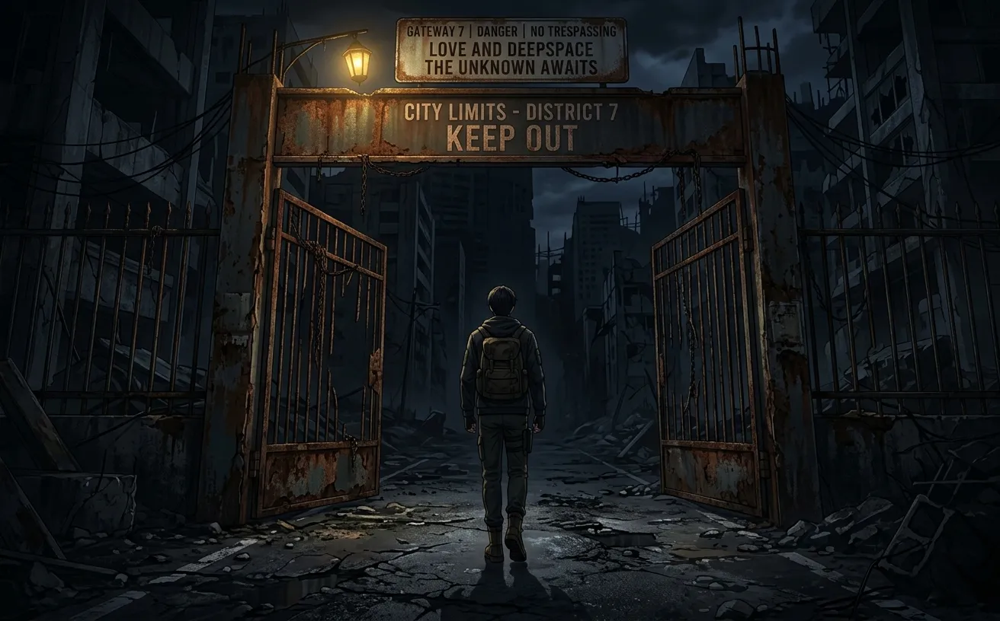
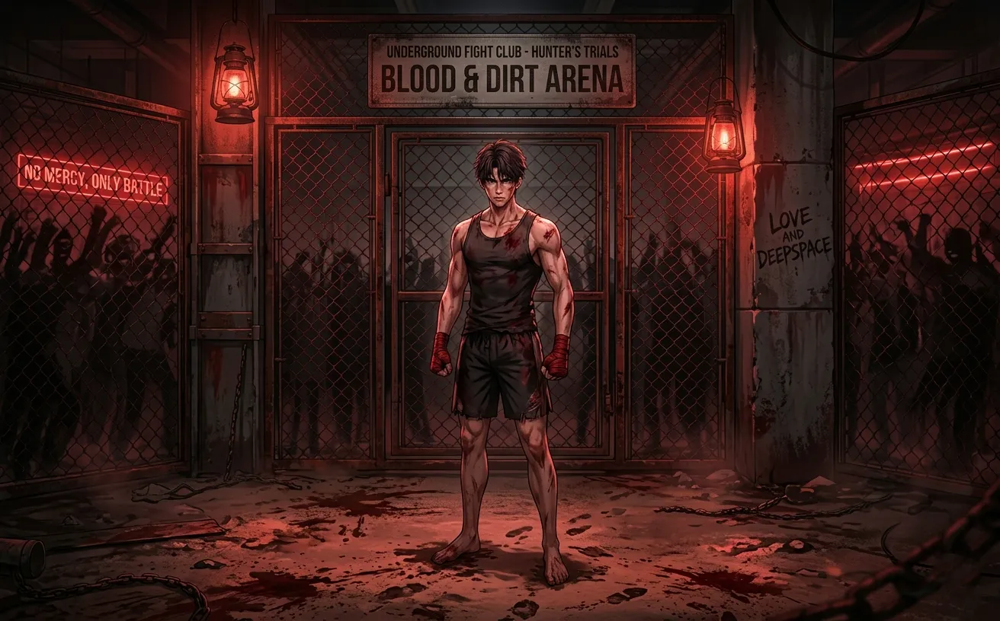
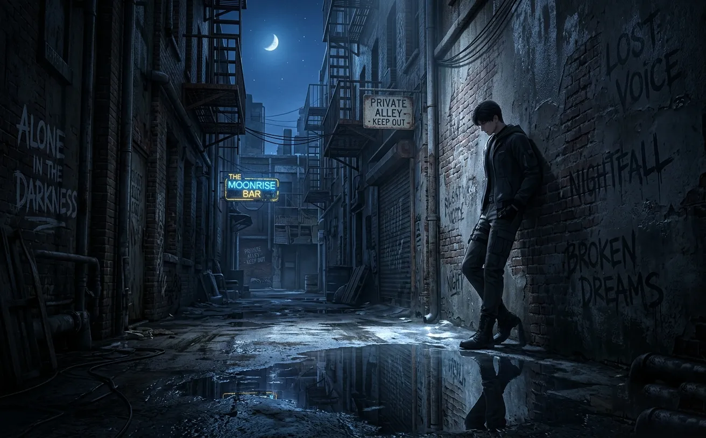
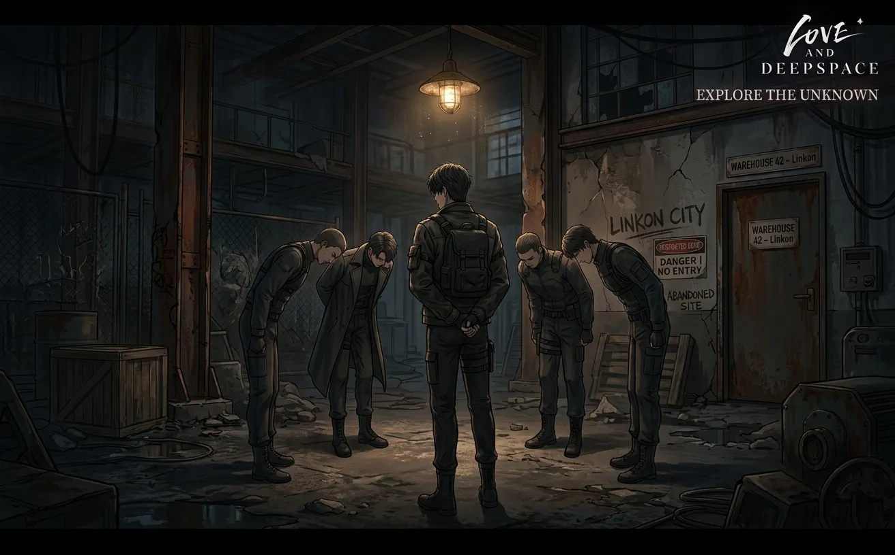
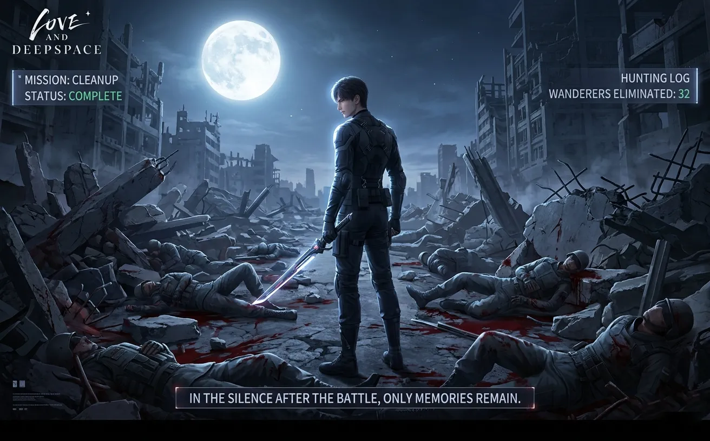
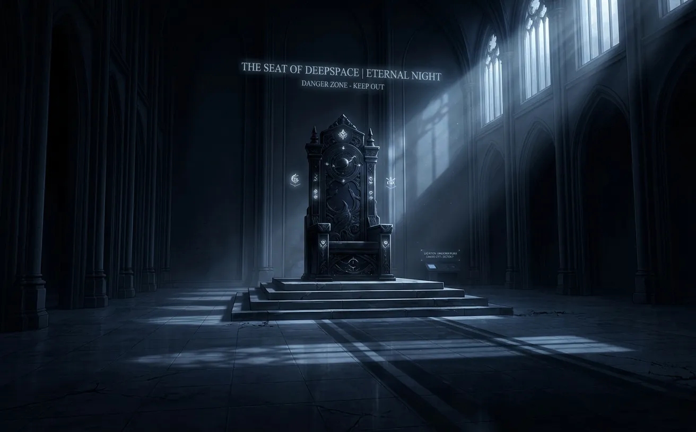
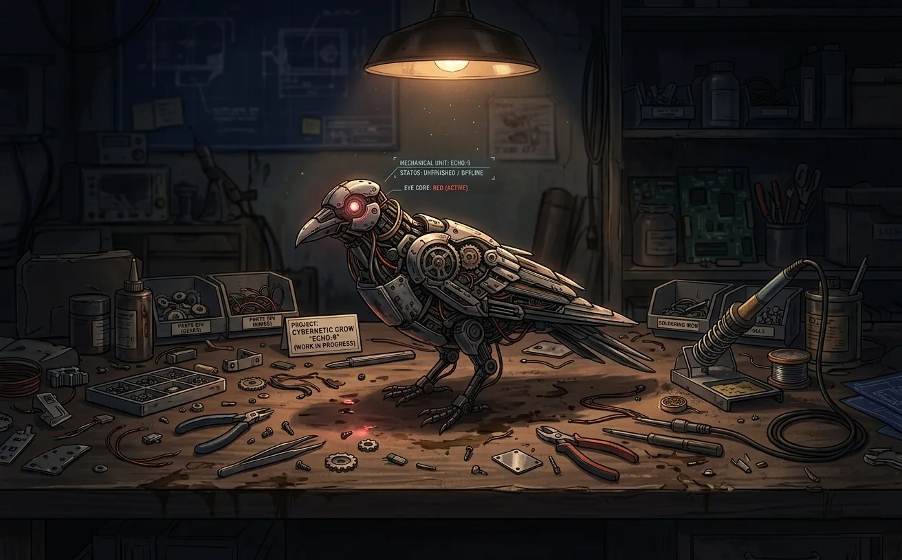
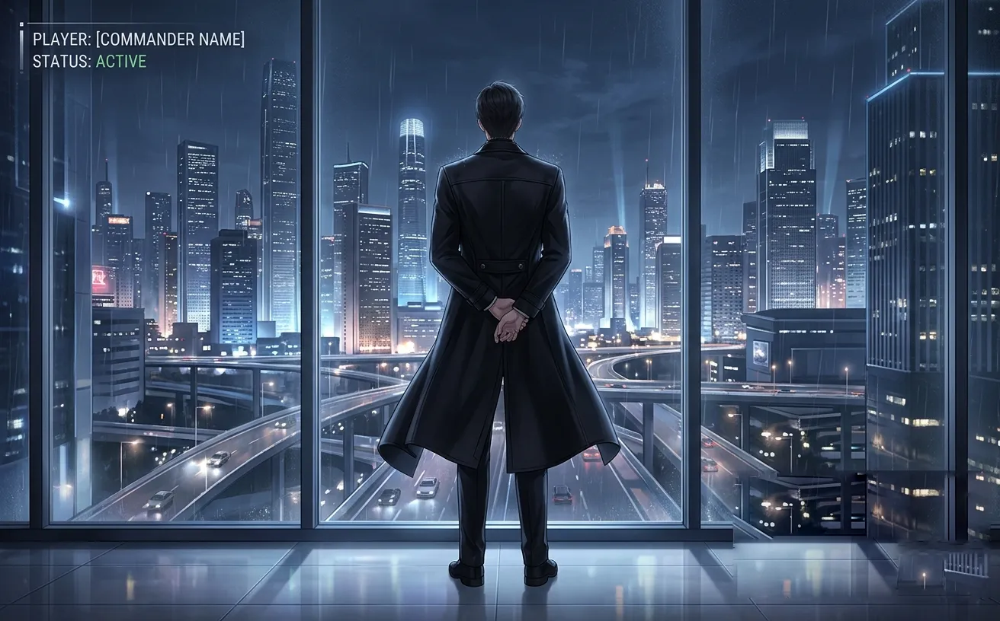
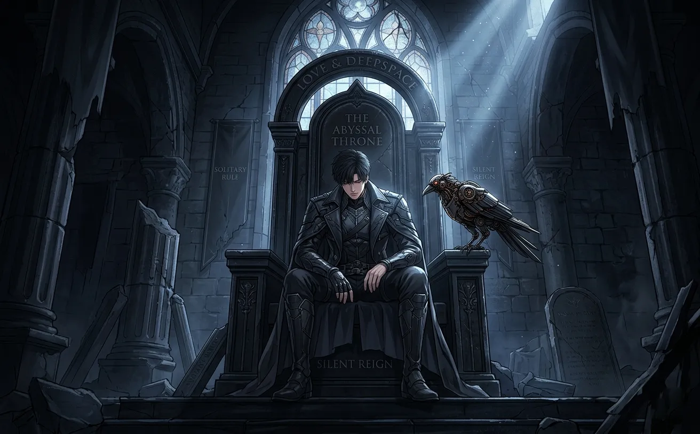

he wasn't always the king. once, he was just a man with nothing to lose.
they call him the king of n109 now.
the lord of onychinus. the shadow that everyone fears.
but before all of that — before the throne, before the empire, before the legend — there was a man.
a man who arrived in the lawless zone with nothing but a name and a hunger.
this is how he became what he is.

he came to n109 on a tuesday. not that it mattered. in the lawless zone, every day was the same — survival.
he had nothing. no money. no weapons. no allies. just a face that looked too young and eyes that had seen too much.
the guards at the gate laughed at him. "you sure, kid? this place eats boys like you for breakfast."
he didn't answer. he just walked past them. into the dust and the shadows. into the chaos.
that was the last time anyone laughed at him.
the n109 zone wasn't like the city. there were no rules. no police. no one to call for help. the strong took what they wanted. the weak died quietly in alleyways, and no one remembered their names.
sylus had no intention of being forgotten.

he found work in the underground fighting pits. not because he wanted to. because it was the only way to eat.
the pit was a hole in the ground surrounded by rusted metal and hungry eyes. men fought until one couldn't get up. sometimes, neither did.
sylus was young. smaller than most. the bookies gave him terrible odds.
he won.
again. and again. and again.
his opponents were bigger, stronger, more experienced. but they were slow. predictable. afraid.
sylus was none of those things.
the crowds started to notice him. the bookies started to fear him. his name spread through the underground like wildfire.
the kid who couldn't lose.
the kid who never smiled.
the kid who looked at his opponents like they were already dead.

he made a friend. a mistake he would never repeat.
his name was viktor. older. scarred. a veteran of the pits who had seen too many fights and lost too much blood. he took sylus under his wing. taught him how to read opponents. how to hide pain. how to survive.
sylus trusted him.
that was his first lesson.
viktor sold him out for a bag of credits. tipped off a rival faction about sylus's location. the ambush came at midnight. three men with knives and questions sylus couldn't answer.
he survived.
viktor didn't.
that night, sylus learned that trust was a liability. that the only person he could count on was himself. that kindness was a weakness, and weakness was fatal.
he never made that mistake again.

over the next year, sylus built something. not a faction — not yet. a reputation.
he took jobs no one else would take. infiltrated territory no one else would enter. killed targets no one else could touch.
people started to notice.
not as a threat — not yet. as a tool. a weapon. someone useful.
sylus let them think that. let them underestimate him. let them believe he was just a hired blade with no ambitions.
they were wrong.
by the end of his second year in n109, he had a list. names of every faction leader. locations of every safe house. codes to every smuggling route.
he was ready.

they called it the night of blood. six factions. thirty-seven bodies. one survivor.
sylus moved like a shadow. silent. precise. unstoppable. he didn't fight fair — he fought to win.
one by one, the leaders fell. their lieutenants scattered. their territories crumbled.
by dawn, there was only one name left standing.
his.
the survivors came to him. not to fight — to pledge. they had seen what he could do. they had no desire to be on the receiving end.
sylus accepted their fealty. not because he trusted them. because he could use them.
and because refusing would have meant more blood. and he was tired of cleaning his knives.

the throne room had belonged to the previous ruler. a man named volkov. old. paranoid. cruel.
sylus had killed him in his own bedroom. the man didn't even have time to scream.
the throne was obsidian. black as night. cold to the touch. volkov had commissioned it to remind everyone of his power.
sylus sat in it for the first time at midnight. alone. the room was empty except for the echoes of his footsteps.
he didn't feel powerful. he didn't feel victorious.
he felt nothing.
he wondered, briefly, if this was all there was. if the years of blood and betrayal had led to nothing but a cold chair in a cold room.
then he stood up. walked to the window. looked out at the city he now owned.
it was ugly. dark. full of desperate people doing desperate things.
it was his.
and he would never let anyone take it from him.

a week after he took the throne, he found the crow.
it was in a junk shop, buried under scrap metal and broken dreams. a mechanical bird, half-finished, its eye cracked, its wings limp.
the shopkeeper said it had been there for years. no one wanted it. too damaged. too expensive to fix.
sylus bought it for almost nothing.
he spent three nights repairing it. wiring. soldering. programming. he didn't know why. maybe he needed a project. maybe he needed something that wouldn't betray him.
on the fourth night, the crow's eye glowed red. it turned its head. looked at him.
sylus smiled. small. almost invisible.
"welcome," he said.
mephisto cawed. it was the beginning of something neither of them could name.
the crow became his shadow. his eyes in places he couldn't go. his witness when there was no one else to see.
over the years, mephisto saw everything. the deals. the deaths. the long nights when sylus sat alone in the throne room, staring at the ceiling, wondering what it was all for.
the crow never judged. never betrayed. never left.
he was the only one.

the sylus they knew now — cold, calculating, untouchable — was not the man who had arrived in n109 years ago.
that man had died somewhere along the way. in the pit. in the alleyway. on the night of blood.
what remained was armor. a mask. a performance.
the king of n109 was a character sylus had created. someone who couldn't be hurt. couldn't be surprised. couldn't be betrayed.
because the real man underneath had been hurt. had been surprised. had been betrayed.
too many times.
the armor was heavy. some nights, he wanted to take it off. to be someone else. to feel something other than cold.
but he didn't know how anymore.
the mask had become his face. the throne had become his prison.
and the king of n109 sat alone in his cold room, watching the city burn, waiting for something he couldn't name.

years later, he would meet someone who looked at him differently.
not fear. not respect. not hunger.
something else. something he couldn't name.
she would ask him questions no one else dared to ask. she would see through the armor. she would make him want to take it off.
but that was later.
for now, there was only the throne. the city. the endless night.
sylus sat in his obsidian chair. mephisto on his shoulder. the weight of the crown pressing down on his skull.
he didn't smile. he didn't frown. he just... existed.
waiting for something.
he didn't know what.
but he would know it when he saw it.
mephisto cawed. sylus reached up and touched the crow's metal feathers.
"you're the only one who stayed," he said.
the crow didn't answer. he never did.
but he tilted his head. and his red eye glowed. and for a moment, sylus didn't feel quite so alone.